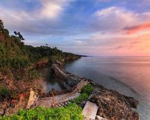
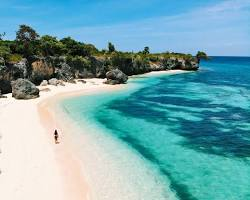
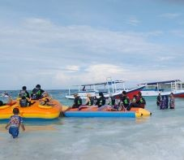

Surga Pantai Pasir Putih di Ujung Selatan Sulawesi
Pantai Bira terletak di Kecamatan Bonto Bahari, Kabupaten Bulukumba, Sulawesi Selatan, sekitar 200 km dari Kota Makassar. Pantai ini terkenal dengan hamparan pasir putih yang lembut, air laut jernih berwarna toska, serta tebing karang yang menghadap langsung ke perairan Laut Flores.
Selain keindahan alamnya, Bira juga dikenal sebagai pusat pembuatan perahu tradisional Phinisi yang telah diwariskan turun-temurun oleh masyarakat setempat. Dari Pantai Bira, wisatawan juga dapat menyeberang menggunakan kapal menuju Pulau Selayar maupun pulau-pulau kecil di sekitarnya.
|
 Pemandangan Pantai Bira dari Tebing |
 Pasir Putih dan Air Laut Jernih |
 Wahana Bermain Pantai Bira |
Alamat: Desa Bira, Kecamatan Bonto Bahari, Kabupaten Bulukumba, Sulawesi Selatan, Indonesia
Jarak dari Makassar: ± 200 km (± 4-5 jam perjalanan darat)
Akses: Dapat ditempuh menggunakan kendaraan pribadi, travel, atau bus umum jurusan Makassar - Bulukumba, dilanjutkan dengan angkutan lokal menuju kawasan Bira.
| Keterangan | Detail | |
|---|---|---|
| Jam Operasional | 08.00 - 18.00 WITA (setiap hari) | |
| Fasilitas | Area parkir, penginapan, warung makan, toilet umum, musala | |
| Sewa Alat Snorkeling | Rp50.000 / set | |
| Wahana air | Banana Boat | Rp20.000 / orang |
| Flying Fish | Rp25.000 / orang | |
| Penyeberangan ke Pulau Penyu | Rp60.000 / orang | |
| Tiket Masuk - Wisatawan Mancanegara (WNA) | Rp30.000/orang | |
| Tiket Masuk | Weekday | Rp10.000/orang |
| Weekend | Rp15.000/orang | |
| Biaya Parkir | Motor | Rp5.000 |
| Mobil | Rp10.000 | |